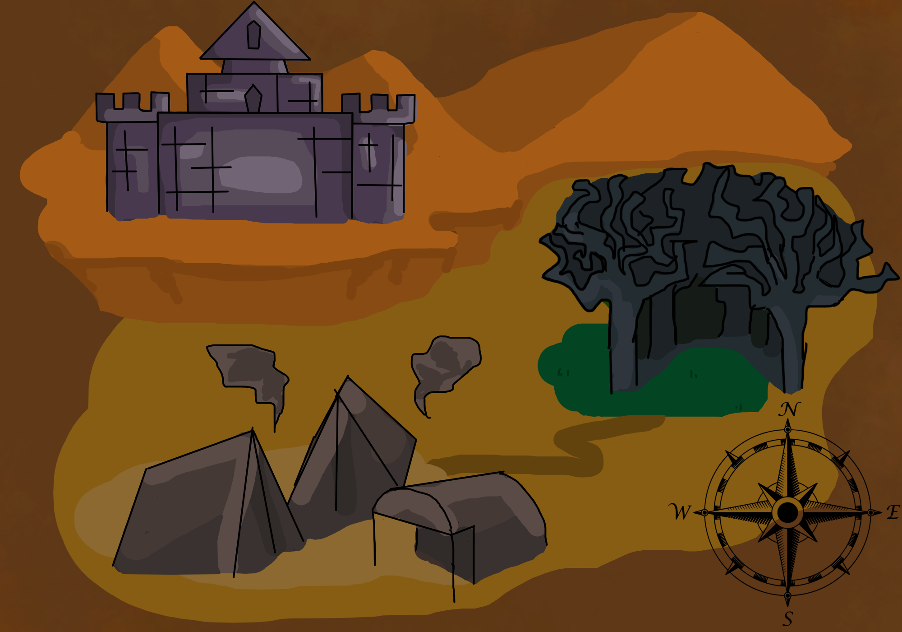

Story Description
In this story, the player finds themselves in an unknown world. There they meet their first companion, Vita, who is part of an organisation called "Shelter". What's unique about this world is the existence of monsters. They are at war with humans. "Shelter" is a group of half-human, half-monster creatures that don't fit in either group, and most of them joined "Shelter" to try and find peace between the two. The player has to choose what to do, who to trust, and how to get back to their own world.
Map
Places
Human VillageThe human village is located in the southwest. There humans live in small tents and buildings. Some of them are afraid of the monsters, but most are determined to fight against them. They even caught some of them and use them against their own kind. From the outside the village seems pretty peaceful, but there have gone some strange rumors around. |